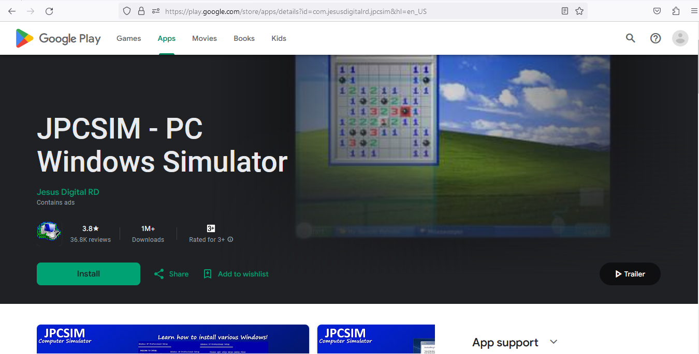
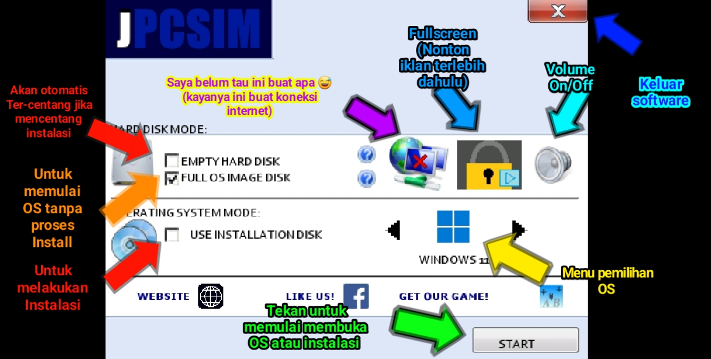

Sebelum kita mengetahui apa itu JPCSIM anda harus bisa membedakan Simulator dan Emulator Berikut merupakan perbedaan simulator dengan emulator;
Emulator atau lebih tepatnya peranti lunak emulator memungkinkan suatu program atau peranti lunak yang dibuat pada awalnya oleh suatu sistem komputer dan untuk dijalankan dalam sistem itu, dapat dijalankan dalam sistem komputer yang sama sekali berbeda.
Simulator adalah suatu alat(Software) yang digunakan sebagai media pembelajaran yang mempunyai bentuk dan fungsi sama seperti alat atau unit yang aslinya (Meskipun tidak memiliki interaksi yang lengkap).
Jika kalian sudah membaca yang di atas maka kita akan masuk ke pengertian JPCSIM, JPCSIM adalah sebuah software yang di rilis untuk platform android dan dapat di unduh melalui Playstore secara Gratis. Software ini dapat membuat pengguna android merasakan menjalankan windows serta proses instalasi windows secara lengkap. Perlu di ingat bahwa software ini hanya Simulator, tetapi ini sangat bagus untuk belajar dan mencoba windows tanpa mengguanakan PC, (di jalankan di android).
Beberapa windows jadul memiliki proses install yang berbeda. (Sumber youtube developer)
Jika saat Instalasi windows muncul press any key, Tekan saja semua button pada keyboard di JPCSIM dan jika sudah Install Sekali tidak perlu tekan key lagi.
Berikut adalah beberapa fitur yang terdapat pada menu JPCSIM :
Saya sediakan 2 link Apk mentahan dan Link menuju Playstore (Terserah mau pilih yang mana,Aman kok :D)